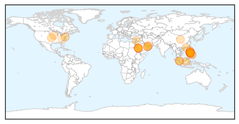
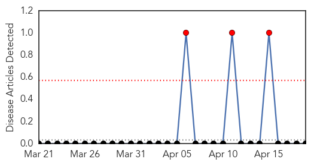

MERS
30-Day Web Trend
9 alerts, 0 warnings
30-Day Twitter Trend
1 alerts, 0 warnings

Article Locations
Article Confidences

Top Articles:
- 1.000
- Death toll rising: Foreigner dies of deadly MERS virus in Saudi Arabia
- 1.000
- SARS-Like MERS Virus Spreads Among Health Care Workers
- 0.999
- Filipino from Abu Dhabi tests negative for MERS
- 0.999
- Filipino tests negative for Middle East virus
- 0.999
- MERS virus outbreak raising SARS-like concern
- 0.999
- Filipino tests negative for Middle East virus
- 0.998
- MERS virus outbreak raising SARS-like concern
- 0.998
- PH nurse has no MERS
- 0.997
- WHO warns over spread of MERS-CoV, urges vigilance
- 0.997
- First Case of MERS Virus in Greece
- 0.997
- 5 Filipinos with MERS in UAE reported in stable condition
- 0.996
- Positive in UAE, returning Filipino nurse tests negative
- 0.996
- PH boosts MERS monitoring after UAE nurse scare
- 0.995
- Filipino nurse from UAE tests negative for Mers
- 0.995
- OFW from UAE tests negative for MERS virus
- 0.995
- DOH urges Pinoy nurse's co-passengers from Abu Dhabi: 'You still need to get tested for MERS-CoV'
- 0.995
- DOH chief: MERS-CoV tests are free
- 0.994
- 15 pilgrims declared free from MERS virus – BorneoPost Online
- 0.993
- 2 more expats die of MERS in Jeddah
- 0.992
- House inquiry on MERS-CoV sought
- 0.992
- DOH: Etihad Airways passengers should still be tested for MERS-COV
- 0.987
- PH gov't on alert for MERS-Coronavirus: official
- 0.983
- Ministry To Monitor Those Who Returned With Deceased Umrah Pilgrim
- 0.982
- DOH to continue tracking co-passengers of OFW infected with MERS virus
- 0.981
- Cebu News, The Freeman Sections, The Freeman
- 0.978
- New tests on OFW negative for MERS-CoV
- 0.972
- Philippines boosts MERS monitoring after UAE nurse scare
- 0.925
- Malaysian pilgrims declared free from MERS viral infection
- 0.919
- US orders farms to report pig virus infections
- 0.882
- USDA orders farms to report pig virus infections
- 0.864
- For MERS-CoV test in Negros Or.: OFW from Lebanon put under quarantine
- 0.841
- Virus blamed in 4 million pig deaths
- 0.670
- USDA orders farms to report pig virus infections
Top Tweets:
-
No tweets found for Apr 19, 2014
Bubonic Plague
30-Day Web Trend
3 alerts, 0 warnings

30-Day Twitter Trend
0 alerts, 0 warnings

Article Locations

Article Confidences

Top Articles:
-
No articles found for Apr 19, 2014
Top Tweets:
-
No tweets found for Apr 19, 2014